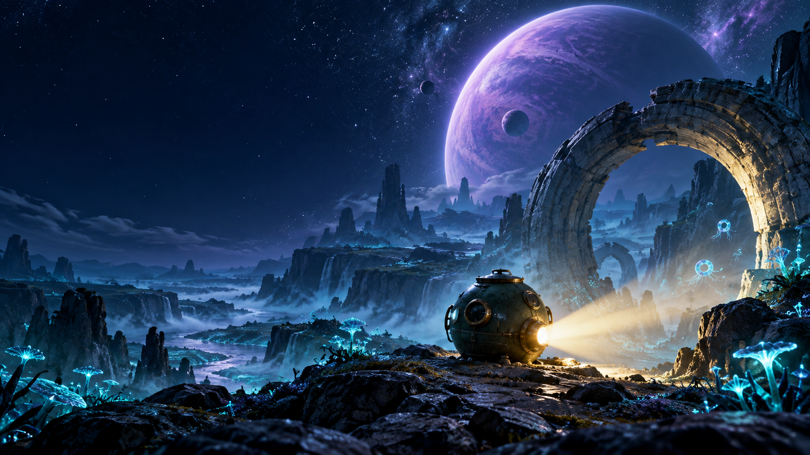

Beyond the light,
another world awaits.
A small exploration capsule. A searching beam. Unknown planets, strange life and a shared journey through the dark.
ELSESTAR is an interactive space exploration experience rendered live for YouTube. When a choice appears, your chat can change what happens next.
Explore ELSESTAR on YouTube ↗
Discover together.
Travel through generated planets and the space between them. Explore alien landscapes, unfamiliar creatures and celestial phenomena.
Choose our next step.
During a live choice, type 1 or 2 in YouTube chat. One ballot per account; your latest valid vote counts. The result changes the journey.
A journey that continues.
Scenes unfold live rather than playing a prerecorded video. Saved discoveries carry into later sessions. When nobody votes, clearly labelled autopilot keeps us moving.
How ELSESTAR connects to YouTube
ELSESTAR uses YouTube API Services to read the broadcast's live chat and manage the operator's broadcasts, titles, thumbnails and stream lifecycle. Google authorization is for the channel operator only. Viewers watch and participate on YouTube; this website has no sign-in or account system.
The experience is fictional, combining authored building blocks into generated worlds. No payment is needed to vote. Paid gameplay effects are currently disabled.
Read our Privacy Policy and Terms of Use for data handling and participation details.